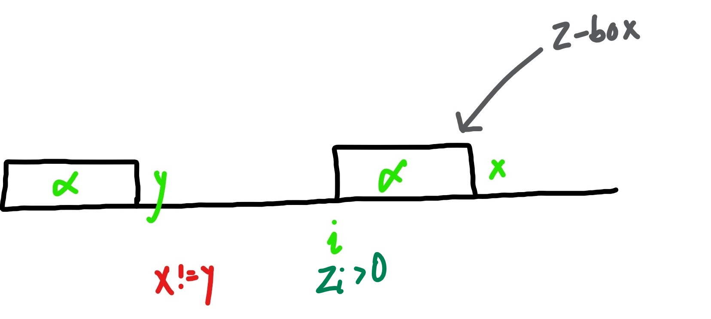
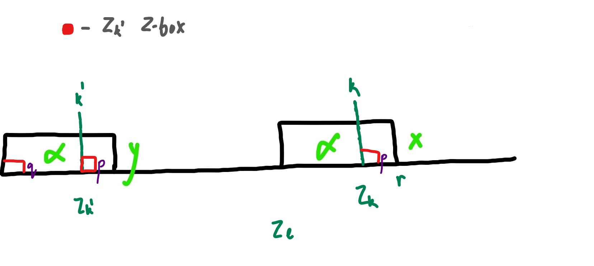
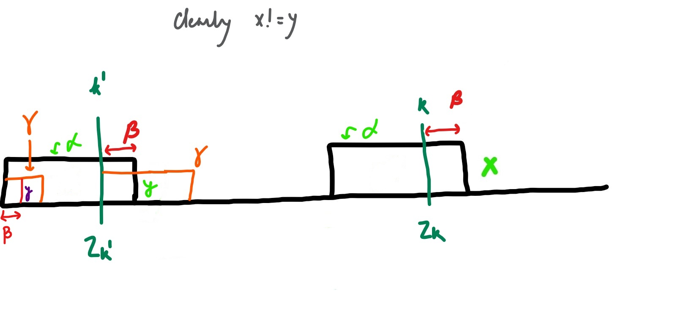

[IMHO: This is the best reference when it comes to Z-box explanations hands down! The professor has done a tremendous job of making the concept look seemingly simple. Kudos!]
One of the most well known use case of Z-box algorithm involves string matching. The question states, given two strings, one a string of text namely t and pattern p, find all occurrences of the pattern p inside the text t.
Example:
T Text : aabcaabxaaz
P Pattern: bcaa
The primitive operation here is that of character comparison. What is primitive operation? The operation which forms the basis of finding time complexity for an algorithm is a primitive operation. Classic example is number of swaps while sorting, say in bubble sort. We say the average case time complexity of bubble sort is O(N2) because on average that is how many swaps we see while sorting the array using bubble sort.
Obvious solution:
Align the pattern with the first character of the text. Now try to match the pattern character by character as much as you can. If you are over with the pattern well and good! If not however, align the pattern with the second character in the text and now start matching character by character both the pieces of text. Also, here since we need to find all the occurrences of the pattern, we anyways will be performing the matching step from each character of the starting text. The time complexity here will hence be O(∣P∣∗∣T∣).
Knuth Morris Pratt [KMP - 1973] (attach page link when compiled)
Z-Algorithm
Definition: Given a string S, Zi(S) is the length of the longest substring in S starting at position i that matches a prefix of S. By definition, please note that the Z−value of the starting index of the string is the length of the string since it is a prefix of itself.
Example:
Indexing : 1-based indexing
T Text : aabcaabxaaz
Z₂ : 1
Z₃ : 0
Z₅ : 3
How can we use Z-Algorithm to find the solution to search the substring problem?
Either take S=P▵T, find all Zi values in S, and if any Zi=∣P∣, it signifies an occurrence of P. ▵ here signifies a character not present in any of the texts.
Or take S=PT, find all Zi values in S, and if any Zi≥∣P∣, it signifies an occurrence of P.
Pictorial representation of the Z-box starting at index i assuming Z[i] > 0
Notation: As the algorithm proceeds, let variable r be the right most position in any Z−box found so far. Then l is the left end of the Z−box whose right end is r. ∣X∣ is the length of substring X. k here represents the index we are currently interested in.
The algorithm splits into the following cases:
Case 1: k≥r
Explicitly computer Zk by the naïve approach. [2-pointer approach of directly matching as far as we can match]. Here we are creating a new Z−box.
Case 2: k<r
Notation for Case 2: Here let β be the substring from k→r. α here represents the Z−box for index l. Clearly here, k′ is the same character as the character at index k, because of the definition of Z−box.
Pictorial representation of the claim for Case 2a
Clearly we can see, if Zk′ is the red box in the figure, the character next to where the box ends, say is p, is clearly not equal to q, otherwise the Z−box would have been larger than current value of Zk′ which is against our assumption. Hence p=q. Now, we also know that the black boxes are same Z boxes for the second half of the boxes i.e. the box from k→r and the box from k′→(r−l+1) are same. Hence, p is the same character in both locations and thereforeZk=Zk′.
Case 2b: Zk′>∣β∣
Claim:Zk=∣β∣
Pictorial representation of the claim for Case 2b
Clearly here x=y {y being the character at the end of first black colored Z−box}. Now if we assume the Z−box of k′ to be γ, then y occurs in both the γ sections after a length of ∣β∣. From these two statements we can conclude that Zk=∣β∣, since x=y.
Case 2c: Zk′=∣β∣
Claim:Zk′=∣β∣, do explicit comparison from position r+1, and ∣β∣+1, until a mismatch is found. Zk is know then. Please note, r here is the right most boundary of 2nd black box in the figure below.
Clearly here p=q and x=p, but this sheds no light on the relation between x and q. So we must check further to see how far we can go.
Time Analysis
Claim: The algorithm does at most O(∣S∣) character comparisons, so the time taken by the algorithm is O(∣S∣).
Proof: The variable r, never decreases. In any iteration r stays the same or moves to the right by an amount at least as large as the number of matches ⟹The number of matches ≤∣S∣. Similar to the bouncing ball proofs where we look at a variable and see a ball bouncing over it to count how many times the ball moves and how the ball moves. Also, in any iteration where some comparisons are done, the iteration ends when the first mismatch occurs ⟹the number of mismatches ≤∣S∣. Hence the number of comparisons ≤2∣S∣=O(∣S∣)
Implementation [In Python3]
def getZBoxValues(str):
zBox = [0 for character in str]
zBox[0] = len(str)
l, r, k = 1, 1, 1
while k < len(str):
if k >= r:
l, r = k, k
while r < len(str) and str[r] == str[r - k]:
r += 1
zBox[k] = r - l
elif k < r:
betaLength = r - k
if zBox[k - l] < betaLength:
zBox[k] = zBox[k - l]
elif zBox[k - l] > betaLength:
zBox[k] = betaLength
else:
l = k
while r < len(str) and str[r] == str[r - k]:
r += 1
zBox[k] = r - l
k += 1
return zBox
if __name__ == "__main__":
text = "aabcaabcaaz"
pattern = "bcaa"
concatenated = pattern + text
zBox = getZBoxValues(concatenated)
print("The Z-Box -> %s" % zBox)
for index, zBoxValue in enumerate(zBox):
if index >= len(pattern) and zBoxValue >= len(pattern):
print("Pattern found at location -> %s" % index)

 https://www.youtube.com/watch?v=MFK0WYeVEag&ab_channel=UCDavis
https://www.youtube.com/watch?v=MFK0WYeVEag&ab_channel=UCDavis

{kind=link}
{kind=link}
{kind=link}
{kind=link}
{kind=link}